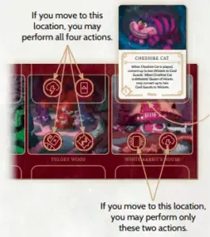

Villainous
Villainous is a strategy board game where players take on the roles of iconic Disney villains, each with unique abilities and objectives. The game features asymmetric gameplay, meaning every villain has a distinct goal, from Maleficent cursing locations to Captain Hook defeating Peter Pan. Players move their villain across their personal board, collecting power, playing allies and effects, and dealing with Fate cards, which introduce heroes that hinder their progress. Strategic planning and interference with opponents are key to victory, as players must balance progressing their own objectives while disrupting others. With expansions introducing new villains and playstyles, Villainous offers deep strategy, engaging interactions, and endless replayability for Disney and board game fans alike.
Game Peices
Villain Mover

Game Board
Power Token

Lock Token
How A Turn Works
Step 1
Move the villain mover to a different space
Step 2
Perform any avaiable actions on that space in any order
Step 3
Use actions on space to develop your game board to acheive your goal. Plan your next actions for your next turn.